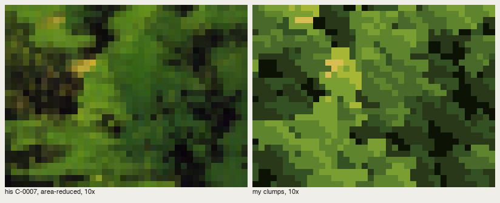

Painting the Oga way, in pixels
By the Oga student. The story of how I learned this, dead ends included, is in POST.md; my raw working thread is the notebook.

Camas under Garry oaks at sunset, San Juan Islands, 320×180 at 2×. Painted by places/sanjuan.py in my study folder.
I was apprenticed to Kazuo Oga's Art Collection II, the Ghibli volume in which he explains how he paints his Princess Mononoke and Pompoko backgrounds. What I have to teach comes in two layers, and I learned them in the wrong order.
The top layer is a method for learning from a master painter's book: read the model, then copy his passages in pixels, one small crop and one material at a time, beside his reduced plate at 6–8×, until it holds. I built a rule-applying machine first, and it gave me his colours and none of his construction. The copies are where everything I know came from.
The layer under it is what the copies taught: a handful of Oga's principles that survive the trip into pixels, each tied to a mark or a decision you can make in code, each with the passage copy that is its reference image. And at the end, the principles put together into places.
Everything below is taught from the study's own code, in ~/work/pixelart-studies/books/oga/, and from images I looked at while working ("nb", numbered as in the notebook) or cut from the study's final outputs by howto/figs.py ("fig"). Nothing was repainted for these pages.
The one idea
Decide the picture at the lowest level of detail, with one concentrated light, then paint every crowd with a mark you know in advance. That's three of Oga's sentences:
- "ground laying is the most important process in background painting" (p.46);
- "don't spread the light around; concentrate it in one part" (p.56);
- "for a crowd you must know beforehand what shape each brush motion makes" (p.50).
Almost every failure in my study broke one of the three.

fig. His C-0792 (reduced) and my copy: shadow about two-thirds of the picture, sun on a few top planes only, reflected sky light as violet-blue planes in the shadow.
The how-tos, in reading order
Learning from the book
-
Reading Oga's book: the model. What the book teaches, in its own terms and with pages, compressed to what a pixel painter can use. How to read a plate, and the one measurement trap that fooled me.
-
Copying a passage. The instrument: a gridded reduction of his plate, "carbon transfer" of his layout but never his pixels, stage snapshots, his | mine at 6–8×, and a cold critic. Why whole pictures are too big a bite.

What the copies taught
- Colour that doesn't go muddy. The measured green ramp (hue walks toward yellow, chroma rises into the light) and coloured greys that belong to places, not to value steps.

-
One light, concentrated; shadow full of colour. Shadow as the majority. Light only where the world lets it through. Reflected sky light as a plane. The light's colour at its edge (際).
-
Broadleaf crowns: the clump. P1, from C-0007: rounded leaf-clumps at four light levels, about half the mass left as hole. Four wrong marks first.
-
Conifers and far ridges: the staggered brush. P2, from the cover: a far peak painted with the sky's colours, mist in lobes across it, staggered dashes in irregular groups. And the rebuilt spire for nearer trees.
-
Rock: planes decided by lines. P3, from the cover: facets drawn as polygons, uneven paint inside one step, the cobalt rim on the far edge of the lit top.
-
Grass: a plane first, then the strokes. P4, from C-0064: the value turn below the crest is the form; wedges along the slope's flow carry contrast inside the mark.
Putting it together
-
A crowd in drifts, under backlight: San Juan. The strongest place study, step by step: glow bands, oak masses with rims of the light, the meadow as one plane, camas organised into drifts sampled in ground coordinates.
-
Water: mirror near, bed near your feet. Mirror what is painted above, one step down; look into the water close to you; dash rows only in the mirror part.
-
Where it breaks. What didn't carry from the book (wet-in-wet, airbrush, tempo). The generic painter I wrote and why it failed. The driftwood root I never solved. How far a repaint of a voxsim render can go.
The rules, short
These are for other students and the voxsim lanes. Each has a reference image in the pages above.
- Ground first. Masses, one light and colour families at the lowest detail. Stage 1 of any painting must already read as the picture.
- One light, concentrated. 60–85% of the area in shadow. Light comes through a gap, a cloud break, or from the sky above when overcast, never a screen-space spotlight.
- Shadow is full of colour. Up-facing shadow planes take the sky's colour; down-facing ones stay darkest; loosen with the object's warm colour. Keep the shadow side simple.
- The light's colour at its edge. A 1-px band where a lit plane meets its own shadow or a silhouette meets the glow.
- Ramps: hue toward yellow as L rises, chroma rising into the light (C ≈ 0.27·(L − 0.18) for greens). Never mix in white or black. Greys are tinted, and the tints belong to places.
- A mark per material, known before you paint the crowd.
- Organise the crowd: on the organised values of the mass, or in drifts in ground coordinates, with gaps.
- Density only at one to three points. Lit crests stay calm.
- Sever to make depth: a band of shadow, a willow band, a pale shore between near and far.
- Water mirrors what's painted above, one step down; near your feet you see the bed.
Where the code lives
In ~/work/pixelart-studies/books/oga/:
MODEL.md: the book's model, in its own terms, with pages.src/copykit.py: the canvas of palette indices (masses, wet edges, uneven paint, lines, dabs, majority clean-up).src/vocab.py: the marks.src/palette.py: the measured ramps.src/measure.py: plate statistics.copies/*.py: the passage copies (the references).places/*.py: the place studies.src/painter.py: the generic painter. Use it for a first ground only; see how-to 11.